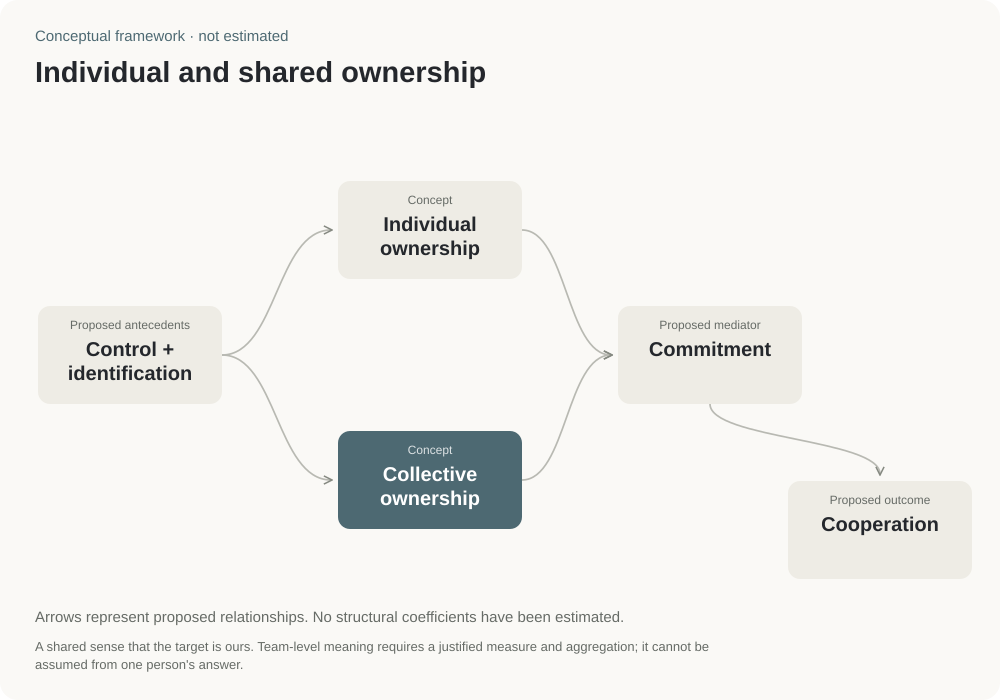

Proposed antecedents
Control + identification
The framework links control over work, identification and responsibility with a felt ownership connection. The current source does not provide an estimated measurement model.
Organizational research · Vietnam
Outlined how feeling that work is mine or ours may relate to commitment and teamwork.
Research planning · Defining research concepts · Commitment and teamwork
A plan for future research, rather than results from a new university survey.
Research framework

The framework separates a personal connection to work from a shared sense of responsibility. It proposes questions about how these feelings relate to commitment and cooperation.
Personal ownership is a sense that the work is mine. Shared ownership is a sense that it is ours. The framework proposes studying how each relates to commitment and teamwork.
Use it to plan interviews or a survey about involvement in decisions, meaningful work and shared goals.
This is a research framework. The materials do not provide a university sample or measured effects.
The arrows show proposed relationships with commitment and teamwork. These relationships have not been estimated with a new university dataset.
The felt connection is personal: control and identification with a work target. Measurement needs to specify the target, such as a task, project or organization.
Existing psychological-ownership framework; no estimated sample or coefficients in the source record.
Specify what a person or group feels connected to.
Distinguish personal ownership from a shared sense of responsibility.
Collect new data to examine how these feelings relate to commitment and cooperation.
Individual / collective ownership → commitment → cooperation
The model is a conceptual specification. Numerical coefficients remain unestimated.
A conceptual framework for relationships to test in an organizational setting.

Proposed antecedents
The framework links control over work, identification and responsibility with a felt ownership connection. The current source does not provide an estimated measurement model.
Concept
A felt sense that a work target is mine. It is distinct from legal ownership and from a verified claim of higher performance.
Concept
A shared sense that the target is ours. Team-level meaning requires a justified measure and aggregation; it cannot be assumed from one person's answer.
Proposed mediator
The framework proposes commitment as a link to cooperative behavior. No coefficients, sample or confirmed mediation test are supplied.
Proposed outcome
Define observable cooperative behavior before collecting data. This conceptual endpoint does not establish employee retention or teaching improvement.